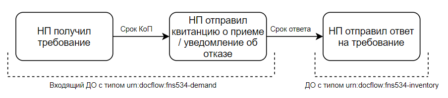

Требование¶
Требование – документ, который налоговый орган направляет налогоплательщику (НП). Получение требования и ответ на него — пример работы с входящим документооборотом. В зависимости от вида требования налогоплательщику нужно совершить определенные действия: отправить первичные документы, уплатить штраф или явиться в налоговую.
Входящий документооборот (ДО) с типом fns534-demand содержит много документов, требование приходит в виде приложения, т.е. документ с типом fns534-demand-attachment.
Процесс работы с требованиями¶
Работа с требованиями состоит из трех этапов.
Данные три этапа относятся к двум видам документооборотов: работа с входящим документооборотом и работа с документооборотом описи. В разделе статусы и порядок документооборота показан процесс работы с требованием. Посмотреть полученное требование можно методом получения списка документооборотов, в фильтре задать тип fns534-demand.
Работа с входящим документооборотом¶
При получении требования нужно сформировать в ответ налоговому органу квитанцию о приеме (КоП)/уведомление об отказе (УО). Отправить их необходимо в течение 6 рабочих дней с момента получения требования. Для требования об уплате налога срок ответа – 1 рабочий день.
Уведомление об отказе формируется в следующих случаях:
Ошибочное направление налогоплательщику.
Несоответствие утвержденному формату.
Отсутствие КЭП налогового органа.
Во всех остальных случаях формируется квитанция о приеме.
Чтобы убедиться, какой именно документ нужно сформировать в ответ (КоП или УО), нужно проверить требование. Если по окончании работы метода POST Check-Demand были выявлены ошибки, то можно переходить к формированию УО. Ссылка на генерацию документа и коды ошибок будут перечислены в ответе метода. Если ошибки при проверке требования не найдены, можно формировать КоП.
Для генерации и отправки КоП/УО нужно воспользоваться методами для работы с ответными документами:
На этом работа с входящим документооборотом требования завершается.
Ответ на требование (документооборот описи)¶
Только для требований с КНД 1165050 и 1165013.
После отправки квитанции о приеме начинается отсчет срока для предоставления ответа на требование. Ответ на требование — это начало нового документооборота описи. Но формируем его не ко всему входящему документообороту, а только к файлу требования в нем (документу с типом fns534-demand-attachment). Сроки ответа и основания для требований разные и всегда указаны в самом требовании.
В электронном виде можно ответить на требования о представлении пояснений и документов (информации). По договоренности налогоплательщика с налоговым органом ответ можно отправить письмом, а не описью. Остальные требования/документы требуют от налогоплательщика других действий, например, уплатить налог, либо явиться в ИФНС.
- Требование о представлении пояснений КНД 1165050
Требование КНД 11650505 подразумевает предоставление пояснений. Иногда с требованием приходит XML-файл, в котором налогоплательщик обязан вписать свои пояснения и выслать его в ответ. На требование о представлении пояснений можно отправить опись документов.
- Требование о представлении документов (информации) КНД 1165013
На требование о представлении документов (информации) нужно отправить опись со списком запрашиваемых документов.